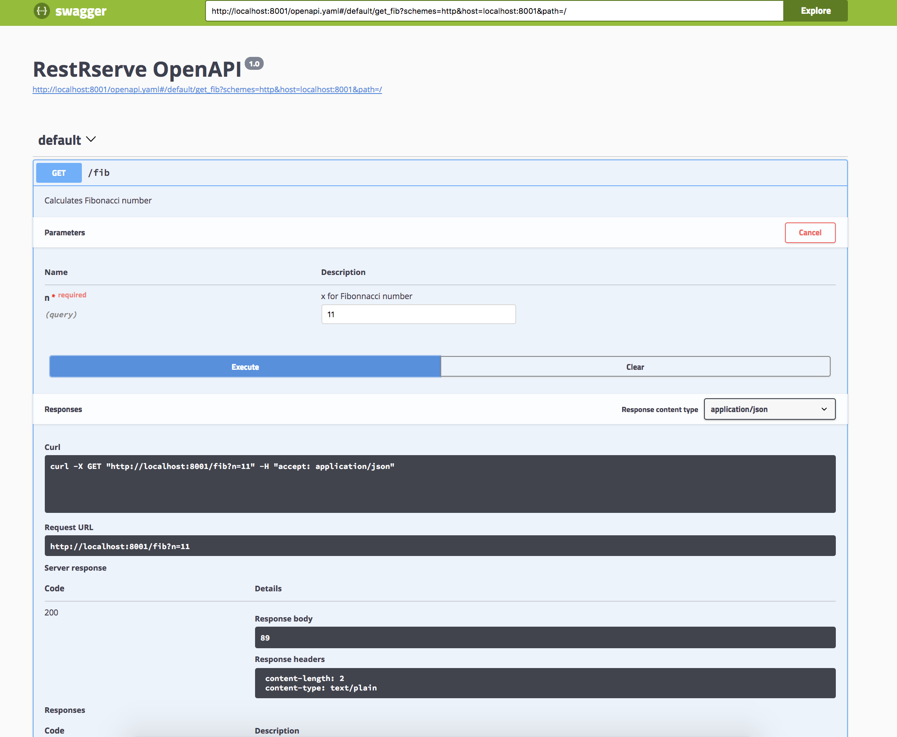

RestRserve
RestRserve is a concurrent high-performance http-server for R applications.
It could handle about 20000 simple requests per second on my macbook laptop with intel i7-7820HQ CPU, 4 cores / 8 threads (~ 40x faster than plumber which can use only 1 thread).
All credits should go to Simon Urbanek - RestRserve is a very thin layer on the top of Rserve.
The main contribution of the RestRserve is a set of functions for convenient registering endpoints and deployment of applications. Also we will try to provide more detailed documentation.
Creating application is very simple. For example let’s create endpoint which will caclulate Fibonacci number for us:
calc_fib = function(n) {
if(n < 0L) stop("n should be >= 0")
if(n == 0L) return(0L)
if(n == 1L || n == 2L) return(1L)
x = rep(1L, n)
for(i in 3L:n)
x[[i]] = x[[i - 1]] + x[[i - 2]]
x[[n]]
}
fib = function(request) {
try({n = as.integer( request$query[["n"]] )}, silent = TRUE)
if((class(n) == "try-error") || length(request$query) != 1L)
stop("request should look like 'n=5'")
RestRserve::create_response(payload = as.character(calc_fib(n)), content_type = "text/plain",
headers = character(0), status_code = 200L)
}
# create application
app = RestRserve::RestRserveApplication$new()
# register endpoints and corresponding R handlers
app$add_route(path = "/fib", method = "GET", FUN = fib)Note that every user function which is registered as endpoint handler should ALWAYS return ‘RestRserveResponse’ object which is easy to construct with RestRserve::create_response (essentially a list with particular fields) .
Start application from interactive session with following command:
app$run(port = "8001")This turns the current R session into Rserve session. Rserve takes over until it is shut down or receives a user interrupt signal.
Please note that if you launch it from Rstudio, then your Rstudio session will be blocked (Ctrl+C will not work). So to exit you will need to kill Rserve manually - just type kill PID from terminal. PID of the Rserve will be printed to the console after application start.
Test it works:
curl http://localhost:8001/fib?n=10
# 55Optionally RestRserve can generate OpenAPI document according to the specification. You just need to provide docstringings in YAML format in your functions:
#' --- (at least 3 - after #')#' - mind whitespace after roxygen2-style comment start #'
app$add_openapi() method arguments and openapi_*() family of functions (not all constructors for OpenAPI objects are fully implemented - contributions are very welcome).fib = function(request) {
#' ---
#' description: Calculates Fibonacci number
#' parameters:
#' - name: "n"
#' description: "x for Fibonnacci number"
#' in: query
#' schema:
#' type: integer
#' example: 10
#' required: true
#' responses:
#' 200:
#' description: API response
#' content:
#' text/plain:
#' schema:
#' type: string
#' example: 5
#' ---
try({n = as.integer( request$query[["n"]] )}, silent = TRUE)
if((class(n) == "try-error") || length(request$query) != 1L)
stop("request should look like 'n=5'")
RestRserve::create_response(payload = as.character(calc_fib(n)), content_type = "text/plain",
headers = character(0), status_code = 200L)
}
app = RestRserve::RestRserveApplication$new()
app$add_route(path = "/fib", method = "GET", FUN = fib)
app$add_openapi()
app$add_swagger_ui()
app$run(port = "8001")
Recommended way to serve application (file with R code) is to deploy it to some directory and start service in daemon mode.
There is only one simple RULE for application - it should have a ‘RestRserveApp’ object in global environment and it should inherit from RestRserve::RestRserveApplication.
Deploying is as simple as:
# fib.R
configuration = c("http.port" = "8001",
"encoding" = "utf8",
"port" = "6311")
# specify directory where to depliy application
dir = tempdir()
# specify path to user application
app_path = system.file("fib.R", package = "RestRserve")
# Here it is a path to "fib.R" demo application built in into the package
# For example on my machine it is here:
# "/usr/local/lib/R/3.4/site-library/RestRserve/fib.R"
# also you can check it online:
# https://github.com/dselivanov/RestRserve/blob/master/inst/fib.R
RestRserve::restrserve_deploy(file = app_path, dir = dir, configuration = configuration)This will generate Rserve configuration file (Rserve.conf) and put it along with a copy of the user application to the application directory dir (in our example current_app_snapshot is a copy of /usr/local/lib/R/3.4/site-library/RestRserve/fib.R):
list.files(dir)
#"current_app_snapshot" "Rserve.conf" Note that by default current_app_snapshot will be used when service is starting. Keep in mind this when you specify filepaths in your code. It is possible to force to use original file - see start_from_snapshot argument of the restrserve_deploy() function.
restrserve_start() starts service in daemon mode. It returns named integer:
PID = RestRserve::restrserve_start(dir)
PID
#/Users/dmitry/RestRserveFib/Rserve.pid
# 67439Test it works
Send request to existing /fib endpoint :
curl -sD - localhost:8001/fib?n=10HTTP/1.1 200 OK
Content-type: text/plain
Content-length: 16
n=5Test it handles requests to non-existing endpoints
Send request to non-existing /incorrectmethod endpoint:
curl -sD - localhost:8001/incorrectmethod?n=10HTTP/1.1 404 Code 404
Content-type: text/plain
Content-length: 41
Resource '/incorrectmethod' doesn't existLoad testing with apib: API Bench:
apib -c 16 -d 10 http://127.0.0.1:8001/fib?n=5(5 / 10) 19310.240 0% cpu
(10 / 10) 19098.729 0% cpu
Duration: 10.009 seconds
Attempted requests: 192220
Successful requests: 192220
Non-200 results: 0
Connections opened: 16
Socket errors: 0
Throughput: 19204.666 requests/second
Average latency: 0.832 milliseconds
Minimum latency: 0.312 milliseconds
Maximum latency: 165.797 milliseconds
Latency std. dev: 1.851 milliseconds
50% latency: 0.709 milliseconds
90% latency: 1.081 milliseconds
98% latency: 2.012 milliseconds
99% latency: 2.774 milliseconds
Client CPU average: 0%
Client CPU max: 0%
Client memory usage: 0%
Total bytes sent: 12.65 megabytes
Total bytes received: 11.92 megabytes
Send bandwidth: 10.11 megabits / second
Receive bandwidth: 9.52 megabits / secondGPL (>= 2)